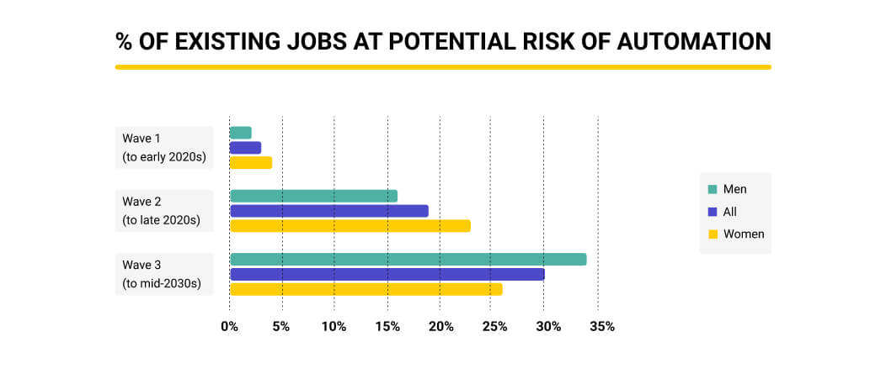

Artificial Intelligence (AI) poses significant moral and ethical dilemmas in contemporary society. This article explores...
Artificial Intelligence (AI) has transitioned from a theoretical concept to a powerful force in modern society. Initially designed to replicate human intelligence, AI now permeates sectors of our daily lives, some namely recommendation systems, autonomous vehicles, healthcare, and financial domains. [1] Russell and Norvig (2016) define AI as the development of algorithms and computer systems capable of executing tasks traditionally within the realm of human intelligence. The rapid expansion of AI technologies has enabled an era of progress alongside many ethical challenges. As articulated by [2] Bostrom (2014), the swift advancement of AI capabilities has outpaced ethical deliberations, resulting in a myriad of ethical quandaries. These ethical concerns include biases from developers of an artificial intelligence, breaches of data privacy, and societal implications arising from automation, notably reducing employment the most. This article aims to delve into the ethical and moral impacts surrounding the evolution of AI. It navigates through the negative social effects posed by AI's great potential, emphasizing the necessity for ethical frameworks and societal contributions needed to guide AI development towards responsible and beneficial uses.
Artificial Intelligence (AI) is everywhere now, but it has some big issues. One of the main problems is that AI can be biased, just like people. Buolamwini and Gebru (2018) found that AI can make unfair decisions, like favoring certain people for jobs or loans because of flawed data or how it's programmed. This unfairness raises questions about who should take responsibility for these biased decisions [3]. These biases in AI aren't just technical mistakes; they bring up bigger questions about fairness and who's accountable. Figuring out who's to blame—whether it's the people who make AI, the data used, or the algorithms themselves—is a tough challenge. It's not just about fixing technology but setting up rules and ethical guidelines to make sure AI decisions are fair for everyone. Moreover, AI also raises concerns about privacy. Moor and Weckert (2019) point out how AI collects lots of our personal information without us knowing. This constant data collection can make us feel like our privacy is being invaded [4]. AI uses this data for things like personalized ads or predictions, blurring the line between what's private and what's not. These issues around biases in AI, unfair decisions in hiring or loans, and the invasion of privacy show why we need clear rules and ethical guidelines for AI. It's not just about fixing technical errors but making sure AI treats everyone fairly and respects our privacy. Creating fair and responsible AI means setting up rules that protect everyone's rights and privacy without letting biases affect important decisions.
The rise of Artificial Intelligence (AI) brings worries about job loss. Frey and Osborne (2017) explain how AI
might take over many tasks, making some jobs unnecessary. This could cause big changes in how jobs work and
make the gap between rich and poor even bigger [5].
AI is good at doing repetitive tasks really fast. A study by PWC (PriceWaterhouseCoopers) shows that about
30% of jobs in the UK could be done by AI by the early 2030s (As seen in figure 1 below) [6]. This could affect jobs in areas like
transportation, manufacturing, and office work, leaving many people without work.
This job disruption might not only affect individual jobs but also make inequality worse. People in jobs that
AI can easily do might have a harder time finding new work. This could make the difference between rich and
poor even wider. To tackle this, it's important to help people gain new skills to fit in the changing job
market.
Dealing with these changes needs different actions. Governments should make rules that help balance new
technology with keeping jobs stable. Schools and training programs should focus on teaching skills that work
well with AI, so people can use this technology better. Partnerships between industries, schools, and
governments are key to helping people adapt to these changes by offering training and support for finding new
jobs.
Ultimately, the worry about AI taking jobs means we need to work together to prepare for these changes.
Governments, schools, and industries need to collaborate to make sure everyone can benefit from AI without
losing their livelihoods.
Figure 1: Employment Impact of AI in the UK by 2030s

PWC's study shows how AI might reduce jobs in the future. This image illustrates the potential impact on
employment due to AI advancements.
[1] Russell, S., & Norvig, P. (2016). Artificial Intelligence: A Modern
Approach. Pearson.
[2] Bostrom, N. (2014). Superintelligence: Paths, Dangers, Strategies. Oxford
University Press.
[3] Buolamwini, J., & Gebru, T. (2018). Gender Shades: Intersectional
Accuracy Disparities in Commercial Gender Classification. Conference on Fairness, Accountability and
Transparency.
[4] Moor, J. H., & Weckert, J. (2019). Robot Ethics 2.0: From Autonomous Cars
to Artificial Intelligence. Oxford University Press.
[5] Frey, C. B., & Osborne, M. A. (2017). The Future of Employment: How
Susceptible Are Jobs to Computerisation? Technological Forecasting and Social Change.
[6] PriceWaterhouseCoopers (PWC). (2020). Automation will impact around 30% of UK jobs by mid 2030s - but which ones?. Retrieved from
https://www.pwc.co.uk/press-room/press-releases/regions/northern-ireland/automation-impact.html